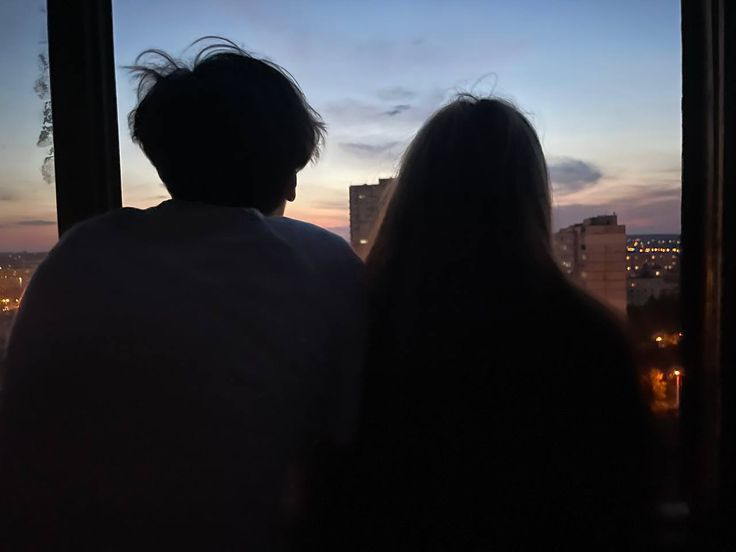

С чего всё началось...
Месяц 1
Глава первая
Самое лучшее знакомство
Я до сих пор помню наши первые долгие разговоры, смущенные улыбки и то, как время рядом с тобой летело совершенно незаметно. Уже тогда я понял, что ты — особенная.
«С первого взгляда и навсегда в сердце»